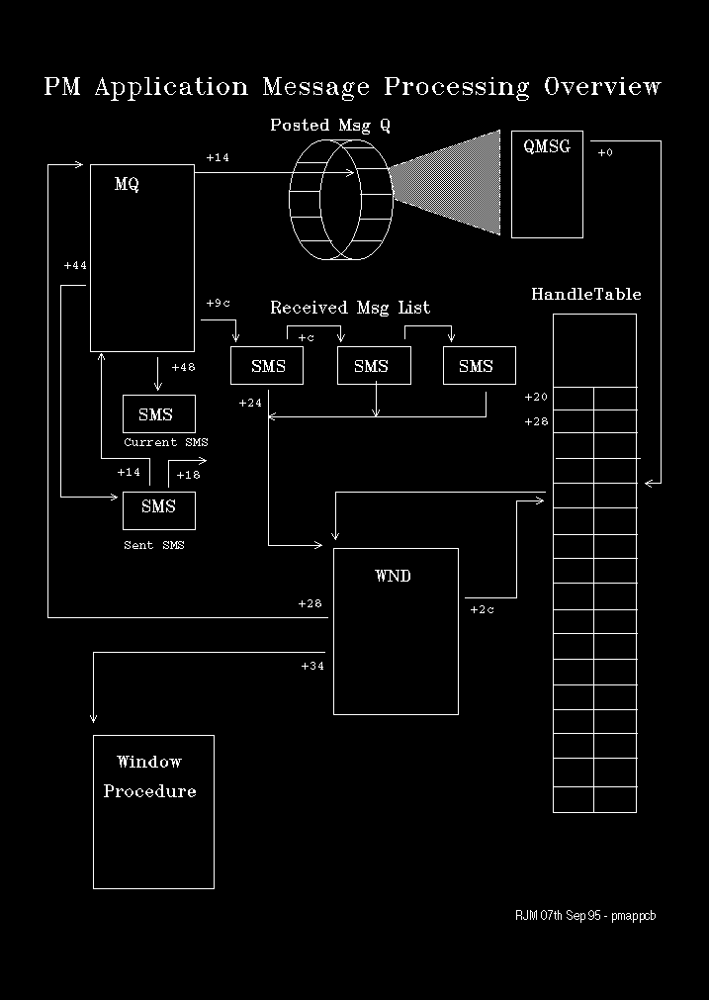

The previous section introduced the notion of a message queue and list, of where there is one pair per PM message thread. We now look at these in more detail, with the associated PM system structures that comprise the applications's messaging environment.
The Message Queue Header (MQ)
The principle fields of interest are:
Offset
Since the message queue is a circular array, four pointers have to be maintained: the current read position, current write position, top and bottom of array.
Each queue entry is a QMSG structure.
Entries are added to the queue in increasing address order, until the maximum (bottom) is reached then entries are added from the top.
Removal of entries only involves updating the current read pointer. Thus, a small trace of past message activity may be seen by scanning backwards from the current read pointer to the current write pointer.
The presence of a non-zero value in this field implies that the message thread is currently blocked in WinSendMsg waiting for a response.
If the message thread recurses, for example through the receipt of a synchronous message, then a subsequent WinSendMsg will cause this field to be updated. The previous contents are saved on the stack.
A non-zero value in this field is of prime interest when diagnosing hangs. It immediately focuses our attention on the recipient of this message.
This field is non-zero when an SMS is removed from the receive list for processing by its associated window procedure.
When this field is non-zero, it implies that the thread's window procedure has been dispatched to process a received message.
SMSs are chained from this location pending dispatch.
Upon dispatch the oldest message is removed from the list and pointed to from offset +0x48 of the MQ.
This is very useful for correlating MQs to threads.
The principle fields of interest are:
Offset
The QMSG is also the form of an entry on the application's message queue.
The principle fields of interest are:
Offset
The handle table may be located from the address at symbol:
pHandleTableThe Window Structure (WND)
The WND has two main functions:
>>
Offset
This scenario is illustrated in the following diagram: